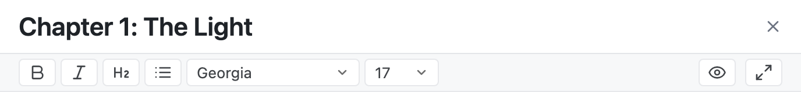
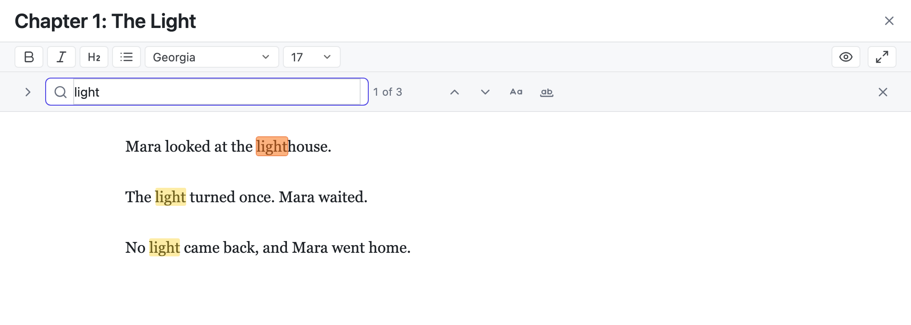
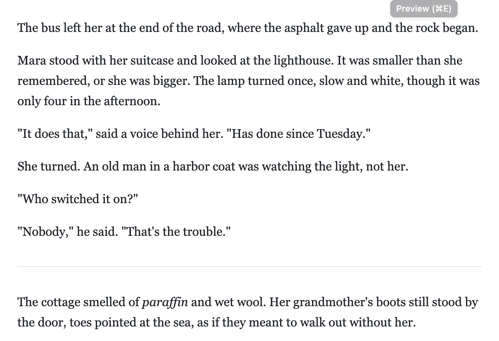
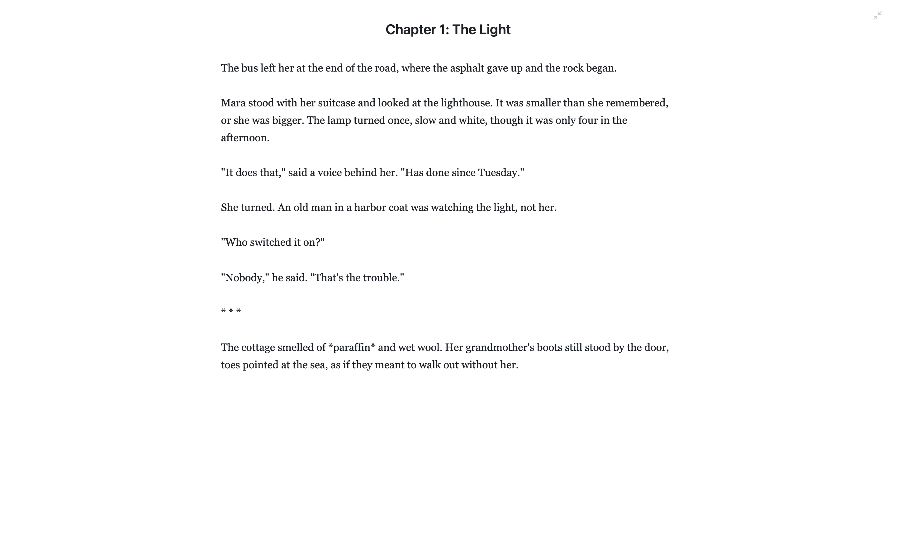
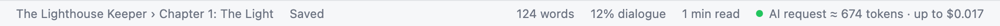

Writing
Open a document, write, and let the app save for you.
Opening a document
Click a document in the sidebar to open it. Its title is at the top of the editor; type there to change it. To also change the file name, use ⋯ → Rename in the sidebar.
To close the document, click the × next to the title, or click the logo in the top bar. The empty screen offers buttons to start a new document.
Saving
You do not need to save by hand. The app saves:
- after 30 seconds without typing,
- when you open another document,
- when you leave the title box,
- and when you press ⌘S.
The status bar says Saved or Unsaved. If you try to close the browser tab with unsaved changes, the browser asks first.
Each save keeps the old text in Version history, so you can always go back.
The formatting toolbar

The text is Markdown: plain text with a few symbols for formatting. The buttons add those symbols for you:
| Button | Adds | Looks like |
|---|---|---|
| B | **bold** | bold |
| I | *italic* | italic |
| H2 | ## Heading | a heading |
| List | - item | a bullet list |
The font and size menus change how the editor looks. They do not change your text.
A line with only * * * is a scene break. Pasted text always arrives as plain text.
Find and replace
Press ⌘F to search the open document. The find bar opens under the toolbar, and every match is marked: the current one in orange, the others in yellow.

- ↵ goes to the next match and ⇧↵ to the previous one; the arrows do the same.
- Aa (Match case) finds only the same capitals. ab (Whole word) skips matches inside longer words, so “light” does not find “lighthouse”.
- Press ⌘⇧H, or click the arrow at the left, to show Replace and Replace all. ⌘Z undoes a replace, one step at a time.
- Selected text becomes the search when you press ⌘F. Esc closes the bar.
To search every document at once, click Search all documents… in the find bar. See Search the whole project.
Markdown preview
Click the eye button, or press ⌘E, to see the formatted text. Each line of your text is its own paragraph, here and in Word export. Double-click the preview, or press ⌘E again, to go back to editing.

Zen mode
Zen mode hides everything except the title and your text. Click the arrows at the right of the toolbar, or press ⌘⇧F. Press Esc to come back.

The status bar

- Where you are: the project and the document.
- Saved or Unsaved.
- Words in this document.
- Dialogue: the share of words inside quotation marks.
- Reading time.
- AI request: how big the next AI request is, and what it may cost. Click it to see the exact text. See Size and cost.
Shortcuts
| Keys | What it does |
|---|---|
| ⌘S | Save now |
| ⌘F | Find in the open document |
| ⌘⇧H | Find and replace in the open document |
| ⌘G / ⌘⇧G | Next or previous match |
| ⌘E | Markdown preview on or off |
| ⌘↵ | Generate with the AI |
| Esc | Close the find bar or the open window, stop the AI, or leave zen mode |
| ⌘\ | Show or hide the sidebar |
| ⌘⌥\ | Show or hide the AI setup panel |
| ⌘⇧F | Zen mode on or off |
| Tab / ⇧Tab | Indent or outdent in the editor |
On Windows and Linux, use Ctrl where this table shows ⌘.